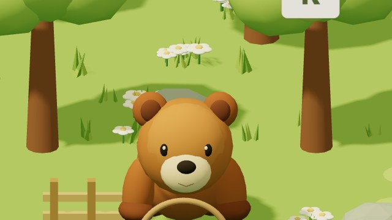
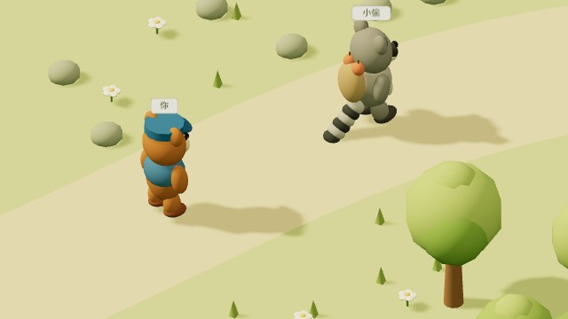

· ·
敲敲岛
小熊的键盘冒险
正式版
声音 开
六种小冒险
12 关
果园准备水果
01
接果装小篮
02
照清单采购
F
J
跳石过小河
03
一串小脚印
04
选一串再出发
森林找朋友
05
朋友在哪里
06
带上两份点心
整理新家
07
给物品找个家
08
我的整理计划
修好邀请卡
09
看物品挑词卡
10
小小修字师
一起去野餐
11
听心愿送邀请
12
朋友都到齐啦
自由开玩
选一个游戏，马上出发

无限接果 · 挑战连击
全字母接果子
进入果园
→

打字加速 · 追上小偷
警察抓小偷
开始追逐
→